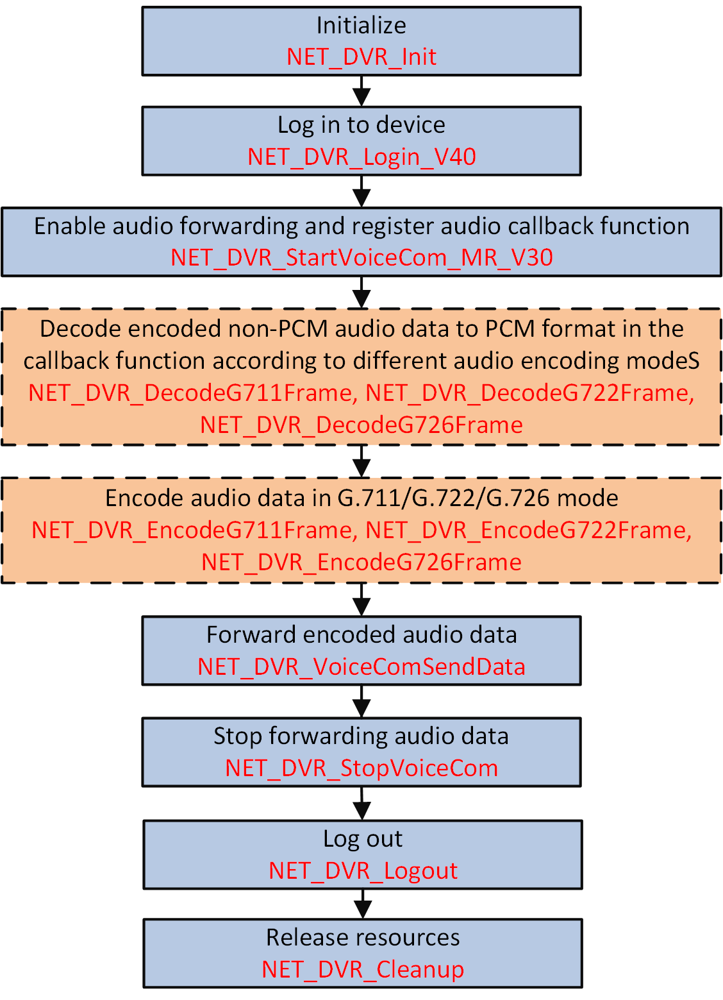

When there are multiple entrances and exits in a park or campus, and the booth of each entrance and exit has been mounted with cameras, the monitoring center can send audio information to a specific camera as needed via the audio forwarding.
Make sure you have called NET_DVR_Init to initialize the development environment.
Make sure you have called NET_DVR_Login_V40 to log in to the device.
Make sure you have prepared source audio with specific format for forwarding.

Figure 1 Programming Flow of Forwarding Audio#include <stdio.h>
#include <iostream>
#include "Windows.h"
#include "HCNetSDK.h"
using namespace std;
void CALLBACK fVoiceDataCallBack(LONG lVoiceComHandle, char *pRecvDataBuffer, DWORD dwBufSize, BYTE byAudioFlag, void* pUser)
{
//The audio data here can be the data encoded and sent by device, or the locally collected and encoded data.
NET_DVR_VoiceComSendData(lVoiceComHandle, pRecvDataBuffer, 80);
}
void main() {
//---------------------------------------
// Initialize
NET_DVR_Init();
//Set connection time and reconnection time
NET_DVR_SetConnectTime(2000, 1);
NET_DVR_SetReconnect(10000, true);
//---------------------------------------
// Log in to device
LONG lUserID;
//Login parameters, including device IP address, user name, password, and so on.
NET_DVR_USER_LOGIN_INFO struLoginInfo = {0};
struLoginInfo.bUseAsynLogin = 0; //Synchronous login mode
strcpy(struLoginInfo.sDeviceAddress, "192.0.0.64"); //IP address
struLoginInfo.wPort = 8000; //IP address
strcpy(struLoginInfo.sUserName, "admin"); //User name
strcpy(struLoginInfo.sPassword, "abcd1234"); //Password
//Device information, output parameters
NET_DVR_DEVICEINFO_V40 struDeviceInfoV40 = {0};
lUserID = NET_DVR_Login_V40(&struLoginInfo, &struDeviceInfoV40);
if (lUserID < 0)
{
printf("Login failed, error code: %d\n", NET_DVR_GetLastError());
NET_DVR_Cleanup();
return;
}
//Forward audio
LONG lVoiceHanle;
lVoiceHanle = NET_DVR_StartVoiceCom_MR_V30(lUserID, 1, fVoiceDataCallBack, NULL);
if (lVoiceHanle < 0)
{
printf("NET_DVR_StartVoiceCom_MR_V30 error, %d!\n", NET_DVR_GetLastError());
NET_DVR_Logout(lUserID);
NET_DVR_Cleanup();
return;
}
Sleep(5000); //millisecond
//Stop forwarding audio
if (!NET_DVR_StopVoiceCom(lVoiceHanle))
{
printf("NET_DVR_StopVoiceCom error, %d!\n", NET_DVR_GetLastError());
NET_DVR_Logout(lUserID);
NET_DVR_Cleanup();
return;
}
//Log out
NET_DVR_Logout(lUserID);
//Release SDK resource
NET_DVR_Cleanup();
return;
}
Call NET_DVR_Logout and NET_DVR_Cleanup to log out and release resources.